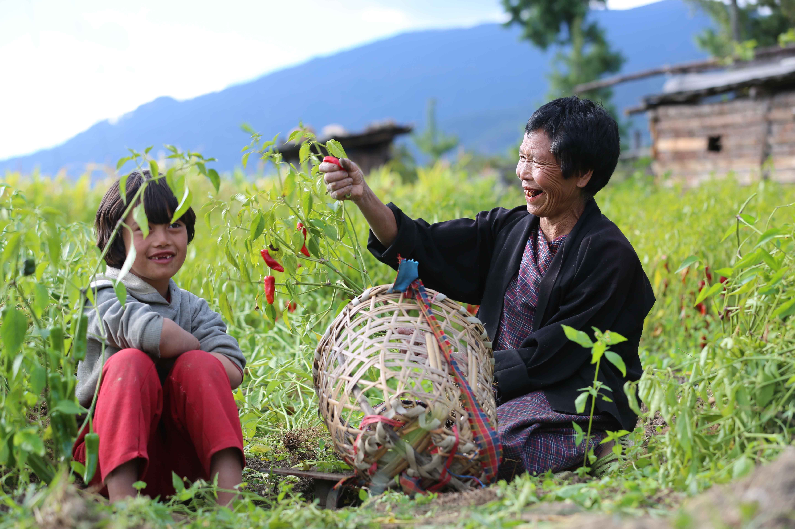

© gomoadventures.com
A Taste of Bhutan
Trip Overview
Bhutan Food & Culture Tour
Introducing the newest and most immersive way to experience Bhutan’s rich culture and traditions — through its culinary delights. Embark on a behind-the-scenes tour of Bhutanese cuisine, exploring the history and heritage of local dishes that have been carefully preserved and passed down for generations. Join us as we journey through the four corners of Bhutanese food, from the rice of the west to the wheat of the high altitudes. Our tour will introduce you to the unique dishes of each region and allow you to taste the flavors that make Bhutan’s cuisine so special.
Led by professional photographer and cookbook author Punap Ugyen Wangchuk, you’ll not only experience the best of Bhutanese cuisine, but you’ll also have the opportunity to learn how to make traditional dishes like the famous Ema Datshi. And don’t forget to embrace the Bhutanese love of spicy chilies, as no dish is complete without them.
As a special bonus, each guest will receive a copy of Punap Ugyen Wangchuk’s cookbook, “Authentic Bhutanese Cookbook,” filled with striking pictures of 27 popular Bhutanese dishes. Dedicated to foodie-adventurous souls worldwide, this cookbook is the perfect way to bring a piece of Bhutanese cuisine back home with you. Don’t miss out on this once-in-a-lifetime culinary experience in the land of the Thunder Dragon.

Trip Highlights
- Tasting and enjoying many different varieties of Bhutanese food
- Learning to cook more than 15 different authentic dishes of Bhutan
- Exploring food culture and different ingredients and vegetables
- Learning how to make butter and cottage cheese and their delicacies
- Learning to make Bhutanese salads of different types
- Learning to make momos (dumplings) and different noodles
Itinerary
Day 1 Paro
Arrive in Bhutan and drive to Thimphu, the capital city of Bhutan; the drive takes about one hour. We will refresh ourselves with a short nature hike, so that you sleep better and connect with nature. Dinner at one of the authentic, popular local restaurants in Thimphu.
Day 2 Thimphu
After breakfast, visit the tallest sitting Buddha, then Kaja Throm (the vegetable market) for shopping and to understand the local food culture and ingredients. Visit the Folk Heritage Museum for lunch and sightseeing. In the evening, Simply Bhutan for dinner and a cultural show.
Day 3 Thimphu
After breakfast, drive to Begana and visit local homes to learn how to cook momos (dumplings) of different types and shapes, as well as homemade cookies. After lunch, a short hike to Cheri and a visit to Tango Buddhist university to see how they cook for hundreds of monks — participate in cooking and the offering, and have dinner with the monks.
Day 4 Punakha
Drive to Punakha and have an authentic Bhutanese breakfast at Dochula. Continue to Lampelri for tea and ceremonial snacks, then down to the lower valley to a homestay, where lunch of different dishes is prepared for us. After lunch, drive down to Lobesa and visit another home to observe and learn how to make roasted rice (zaw). Dinner at the hotel, again with a variety of dishes.
Day 5 Punakha
After breakfast, visit Punakha Dzong and hike to a homestay for an authentic lunch, learn to cook a few more dishes, and enjoy a hot stone bath and dinner. Learn to make butter, cheese, Bhutanese pizza and puffed rice (mazkhu).
Day 6 Punakha / Wangdue
After the overnight homestay, prepare a Bhutanese breakfast in the morning with dried yak or beef, ezay and butter tea. Relax and explore the village, then return for another delicious lunch. After lunch, drive to the nunnery for evening prayer and dinner with the nuns. Overnight at the hotel.
Day 7 Trongsa / Bumthang
After breakfast, drive to Bumthang via Trongsa, stopping at Sephu for lunch to learn to cook a popular Bhutanese lunch and enjoy it. On arrival in Bumthang, stroll through Chamkhar town and learn to cook authentic Bumthap meals for dinner.
Day 8 Bumthang
After a buckwheat pancake breakfast, visit some famous monasteries and temples and drive to the Tang valley. Check in to the Tang Ugyen Choling Heritage guest house and meet the author Kunzang Choden, who has written many books, including on the culture and tradition of food in Bhutan.
Day 9 Bumthang
A rest morning. In the afternoon, learn to cook a few more regional dishes and visit the palace museum, a temple and the village.
Day 10 Phobjikha
Drive back to Phobjikha, stopping in Trongsa for lunch and a visit to the Ta Dzong museum dedicated to the monarchy of Bhutan, with dinner at the Waterfall Cafe, Trongsa. Visit Gangtey Monastery and a homestay, and hike in the Phobjikha valley.
Day 11 Paro
Drive back to Paro, stopping in Yusuna village for meals and to see chili production, including red chili powder and how to make chili paste. Evening meal of jomja and lomba.
Day 12 Paro / Tiger’s Nest
Hike to Tiger’s Nest Monastery, with souvenir shopping and a farewell dinner in the evening.
Day 13 Departure
Departure to Bangkok, Delhi, Dhaka, Kathmandu or Singapore.